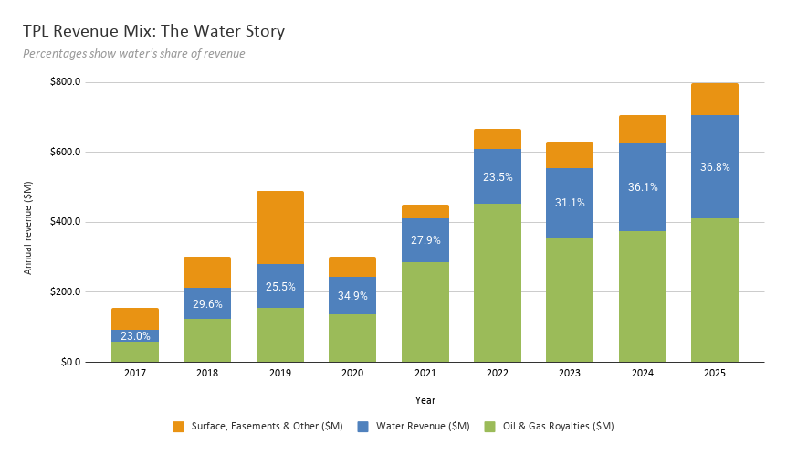
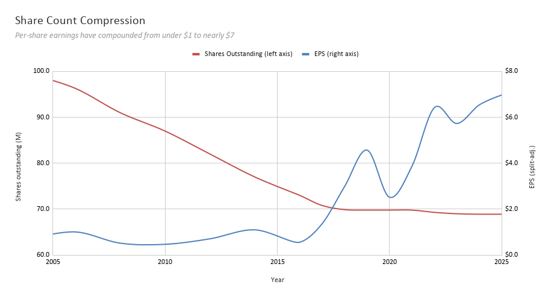
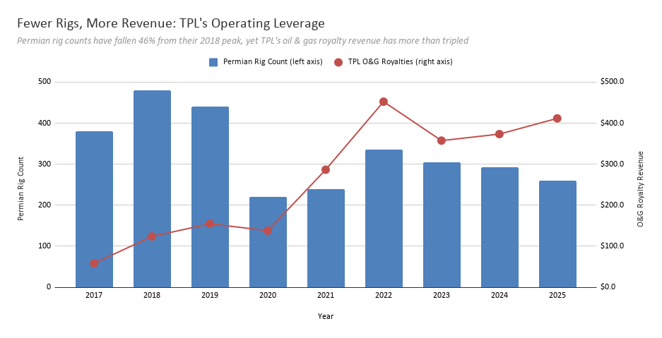

Basin & Change: A Brief Look Into the Texas Pacific Land Company
On March 3rd, 1871, the Texas and Pacific Railway Company (T&P) was chartered to build a railroad linking modern-day Marshall, Texas, to San Diego, California, running through Arizona and New Mexico along the way. They were incentivized to build rail line through massive land grants from the state of Texas; the charter mandated that 1,400 miles of track were to be laid by 1882, at which point the railroad ought to have been completed. This proved difficult due to financial setbacks, e.g. the Panic of 1873, and by 1881 only 972 miles of it had been built. In 1888, the Company filed for bankruptcy. As a way to compensate the bondholders who financed the endeavor, the T&P granted them the land it owned in Texas - approximately 3.5 million acres. The bondholders then created a trust (the Texas Pacific Land Trust) to liquidate that land, and the certificates of that trust were later listed on the New York Stock Exchange.
This trust was later renamed the Texas Pacific Land Corporation. Between 1888 and 1920, the trustees old off land to ranchers, settlers, and speculators at low prices, and the acreage shrank steadily. With the discovery of oil in Texas in the 1920s, the company pivoted to leasing the land to oil drillers while retaining the underground mineral rights, charging royalties on every barrel of oil produced. By opting for leases instead of outright land sales, the trust preserved its ownership of the land long enough to capitalize on subsequent oil booms, including the modern shale revolution. Today, it holds about 868,000 to 882,000 acres of surface land in West Texas, still making it one of the largest landowners in the state.
Exhibit 1: Water Revenue
In addition to its income from oil and gas itself, it also brings in a significant amount of revenue selling water for use within the oil and gas industry. Water-related revenue (sourced water sales + produced water royalties) has nearly tripled since 2020, steadily diversifying TPL away from commodity-price-driven oil & gas royalties.

Water revenue grew from ~$36M (23% of revenue) in 2017 to ~$294M (37%) in 2025. When oil & gas royalties dropped from their 2022 peak of $452M to $357M in 2023, water held firm and kept growing, acting as a partial hedge against commodity price swings. The spike in ‘Surface, Easements, and Other’ in 2019 reflects a one-time $135M land sale.
Exhibit 2: Share Count Shrinkage
TPL has been one of the most aggressive repurchasers in the market relative to its size. Since 2004, it has retired over 30% of its shares (split-adjusted). The trust/corporation has been doing so for decades, compressing the outstanding count dramatically. As this share count compresses, each remaining share will capture a larger slice of the revenue and earnings generated by the land.

Assuming that the company isn’t planning on selling the land anytime soon, TPL’s land won’t deplete, so every retired share permanently concentrates ownership of that asset base. From 2004 to 2025, shares fell from ~99M to ~69M (a ~31% reduction), while EPS rose roughly 9x. The buyback pace slowed after 2019 as the stock price climbed into the thousands (pre-split), making each dollar of buyback retire fewer shares. The two 3-for-1 splits (2024 and 2025) broadened access but didn’t affect the math.
Exhibit 3: Permian Basin Rig Count vs. TPL Royalty Income
In 1920, the Texas and Pacific Abrams No. 1 well struck oil in Mitchell County. Named after a leasing agent for the trust, it became the very first commercial oil well in the Permian Basin. The Permian Basin is the largest oil field in the United States, spanning over 86,000 square miles and producing over 6 million barrels of oil a day, according to a 2025 report by the U.S. Energy Information Administration

But recall that TPL doesn’t drill anything itself, so its royalty income is purely derivative of other people’s activity on its land. Permian rig counts have fallen 46% from their 2018 peak, yet TPL’s oil & gas royalty revenue has more than tripled. TPL’s strength lies in its operating leverage: longer laterals, higher per-well productivity, and TPL’s expanding royalty acreage mean each rig generates far more revenue for TPL than it used to.
Three forces explain why royalty revenue per rig has increased 10x from 2017 to 2025. First, well productivity: average lateral lengths in the Permian have roughly doubled, meaning each well contacts more reservoir rock and produces more oil. Second, TPL has actively expanded its royalty acreage through acquisitions (notably $275M in Midland Basin NRA in late 2024 and $474M more in 2025). Third, the math of royalty ownership itself: operators bear 100% of the capital cost while TPL collects a percentage of production for free. In a ‘do more with less’ environment where the exploration and production segments (E&Ps) of the industry are squeezing efficiency, TPL benefits.
It is clear that TPL is in an extraordinarily stable place - they do not own drilling rigs, run refineries, or employ thousands of workers, functioning more as a real estate company or a ‘land bank’ than a traditional O&G company. Whatever expenses they do have mostly go towards their water infrastructure: building pipelines, recycling hubs, and specialized water treatment facilities; expanding them; writing down these assets; and so on. TPL has zero debt; the majority of their free cash flow goes towards cash dividends (which they raised by 12.5% in 2026) and opportunistic share buybacks.
TPL has no plans to sell any of their land. In fact, they have been buying more: $275M in Midland Basin NRA in late 2024, another $474M in 2025. If they do sell a parcel, they do so strategically, where they can attach some sort of long-term revenue string. A land sale in Q1 of 2026 is a perfect example: they sold a parcel for ~$43M related to a datacenter and power generation project, but the payment comes over roughly 20 years, and TPL also secured a water supply agreement plus an option to supply additional water to the facility. The company's stated mission is to ‘optimize and build upon’ its holdings, and it is far from winding down, especially with the datacenter buildout.
In December 2025, TPL announced a partnership with Bolt Data & Energy, investing $50M for equity, warrants, and the right of first refusal to supply water to Bolt’s data center projects across TPL land. Then in June 2026, TPL agreed to provide surface acreage and brackish groundwater to Chevron for ‘Project Kilby’, a large power generation facility supporting a data center in Reeves County. The thesis is quite straightforward: West Texas has cheap natural gas, abundant land, a light regulatory environment, and a skilled energy workforce. Data centers need power, water for cooling, and space; TPL has all three. CEO Tyler Glover said on a Q1 2026 earnings call that “virtually every major hyperscaler and AI lab are evaluating large-scale plans in Texas”. Whether this actually becomes material revenue is an open question, but it is interesting to think about how TPL/T&P’s land use has changed since the over the past ~150 years.
Risks & Challenges
The risks to this company mostly have to do with its water operations. Induced seismicity and water disposal regulation are perhaps the largest tangible threats to TPL. An incredibly unfortunate side effect of their saltwater disposal wells is that the injected water within these wells raises subsurface pressure. As the pressure builds, it triggers earthquakes on pre-existing fault lines: since 2017, over 8,000 earthquakes exceeding magnitude 2.0 have been recorded in the Delaware Basin (which makes up half of the broader Permian), including 10 events above magnitude 4.5. The Texas Railroad Commission has responded by restricting disposal activity, suspending deep disposal permits where earthquake activity is most severe, and significantly tightening how saltwater disposal wells are approved across the entire Permian Basin.
What is at risk for TPL is its produced water royalty stream ($124M in 2025), which comes from operators disposing of wastewater on TPL's land. If disposal volumes get restricted, TPL could see that revenue stream thin out. However, the company is addressing this. In 2025, they built a 10,000 barrel-per-day produced water desalination facility in Orla, Texas, which could eventually turn the problem into an opportunity by converting more wastewater into usable water as the operation scales.
Of course, it doesn’t end there. Aquifer depletion and long-term water scarcity also complicate TPL’s future. The Ogallala Aquifer, a major source of freshwater in the region, is being drawn down at roughly 6.5x its recharge rate. While this water scarcity makes TPL’s existing water rights more valuable in the near term, if freshwater supplies tighten severely, it could eventually constrain the drilling activity that drives most of the company's revenue. The land itself isn’t at risk of environmental degradation in a conventional sense; the subsurface is what’s getting more complicated.
The last concern has to do with valuation and concentration. Nearly all of TPL’s revenue is tied to a single geographical area (the Permian Basin), and the stock trades at premium multiples with little room for error. At roughly 70x trailing earnings and 35x revenue, the market is pricing in both the continuation of the existing royalty streams and meaningful upside from data centers and other uses. If the AI datacenter thesis takes longer to materialize, or if Permian production growth slows faster than expected, the valuation could compress quickly.
In 2024, Goldman expected growth to decelerate from 520,000 barrels/day added in 2023 to ~270,000 in 2026; the EIA’s January 2026 outlook confirmed the deceleration, forecasting that Permian production would stay essentially flat at ~6.6M bbl/d through 2026 before dipping slightly to 6.5M in 2027. So the ‘slowing growth’ thesis has largely played out. But when the WTI surged past $90-100 per barrel during the Hormuz crisis, frac crew utilization in the Permian jumped 20% even though the rig count itself stayed flat, meaning operators were rushing already-drilled wells into production rather than drilling new ones. So although growth is slowing, production isn’t at risk of falling off a cliff. For TPL specifically, the slowdown matters less because of the rig-count-vs-royalty divergence charted above. TPL is capturing more revenue per rig than before, so even flat activity will continue to produce growing royalties.
There is an old idea in economics, usually attributed to David Ricardo, that owners of fixed, non-reproducible assets will capture an increasing share of economic surplus as demand grows, simply because supply cannot respond. Land is the penultimate example of this. One can build more factories, hire more workers, drill more wells - but not make more land. TPL might be the purest expression of Ricardo’s insight in public markets today. The 880,000 acres the company holds today were granted as part of a consolation prize for bondholders in the aftermath of a failed venture; the intention was to liquidate the land and dissolve the trust that held it. Instead, each decade brought a new opportunity: grazing, then oil royalties, then water sales, and now, data centers for artificial intelligence. The most resilient business in the Permian Basin, it seems, is the one that doesn’t produce anything.